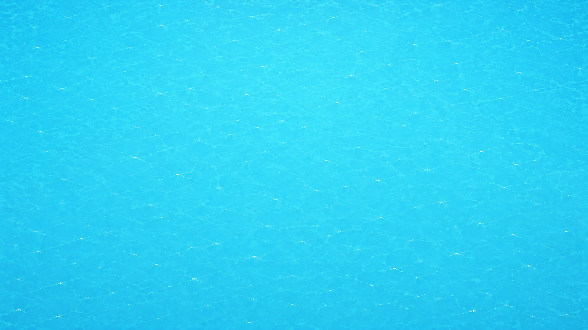

MISSION
1/13

AIR TRAFFIC CONTROL
MISSION COMPLETE
Two numbers can locate any point on the plane.
PREPARING AIRSPACE

AIR TRAFFIC CONTROL
Two numbers can locate any point on the plane.
PREPARING AIRSPACE
Rotate your device
for the best flight deck view